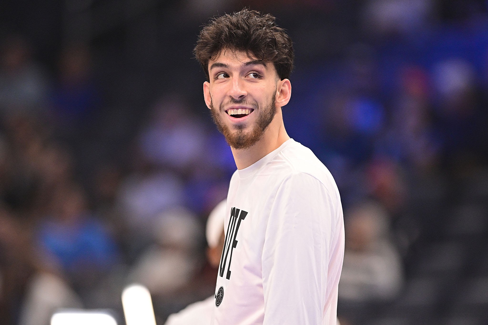
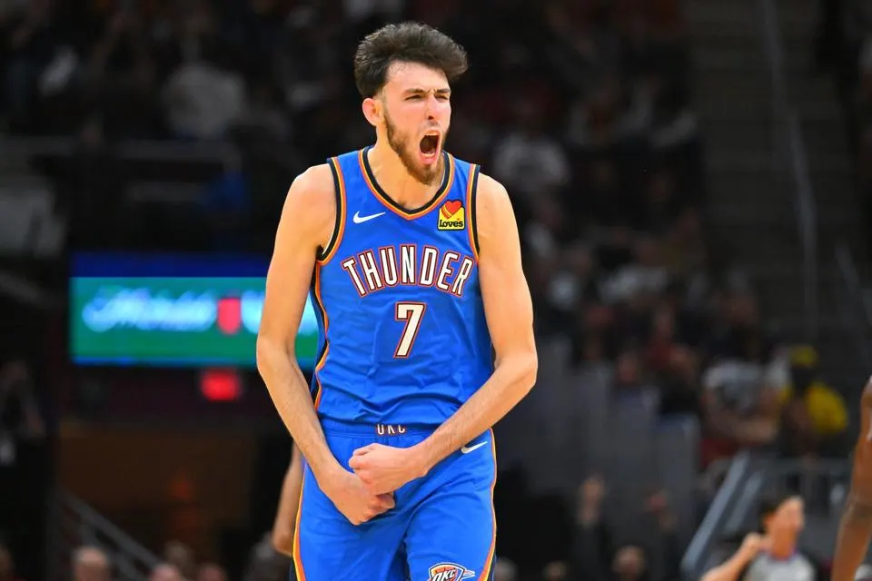
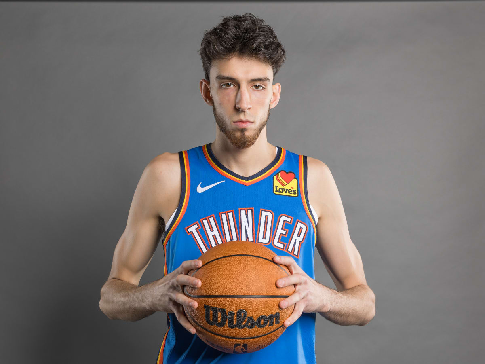

Top 3 NBA Rookie of the Year 2023-24 Season Candidates
1. Chet Holmgren



Chet Holmgren's stats
17.4 PPG, 7.5 RPG, 2.6 BPG, 54% FG, 40% 3PT
Holmgren’s been a sniper from deep while ranking fourth in the NBA in blocks. If it weren’t for Wembanyama’s
special
season, Holmgren would be a runaway candidate to win Rookie of the Year. Winning the race right now, Holmgren has
been
much more efficient as a scorer than his lanky cohort. Plus, it’s not like Holmgren hasn’t been superb
defensively,
either, where he ranks tenth in the NBA in defensive win shares (1.8).
Defensively, Wembanyama is a problem for any opponent he faces. Yet offensively, could still improve his
efficiency, as
he’s been having to take 15.8 shots per game just to average nearly 19 points per contest. That’s not ideal, but
this is
far from his final form. Wemby already shines the glass with the best of them, ranking second in the NBA in
defensive
rebounding rate at a ridiculous 30.1%.
The 18th overall pick out of UCLA, Jaquez has quickly developed into one of the best shooters on the Miami
Heat. Jaquez
doesn’t hesitate to fire up shots from distance, which is exactly what the Heat need to complement the likes of
Jimmy
Butler and Bam Adebayo. The one they call ‘Juan Wick’ has scored in double figures in 23 of his past 26 games and
has
rapidly risen up NBA Rookie of the Year rankings.